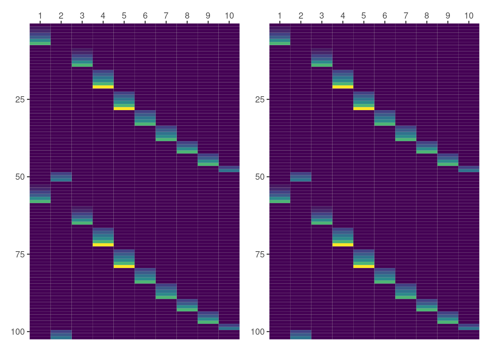
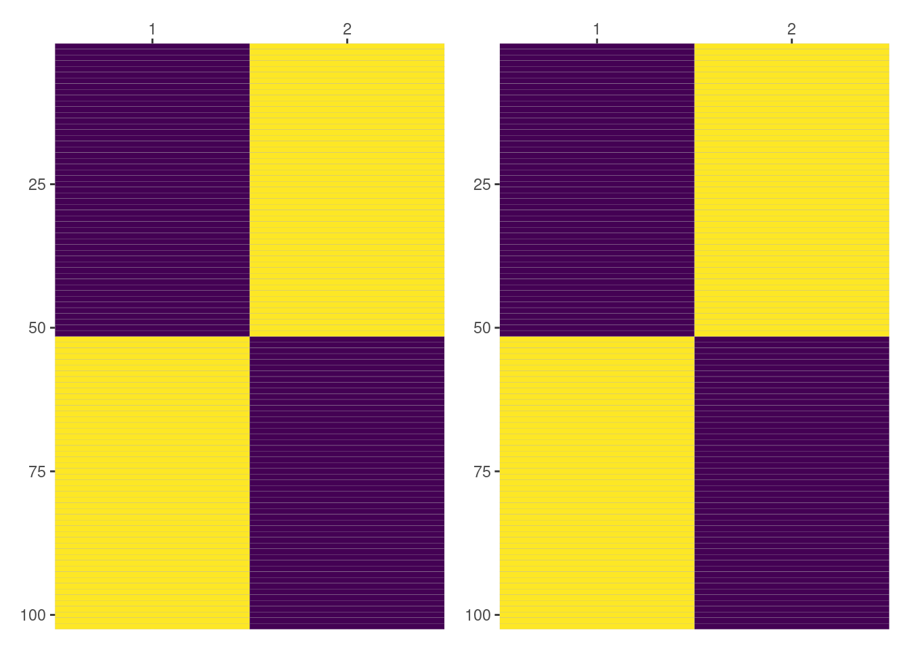
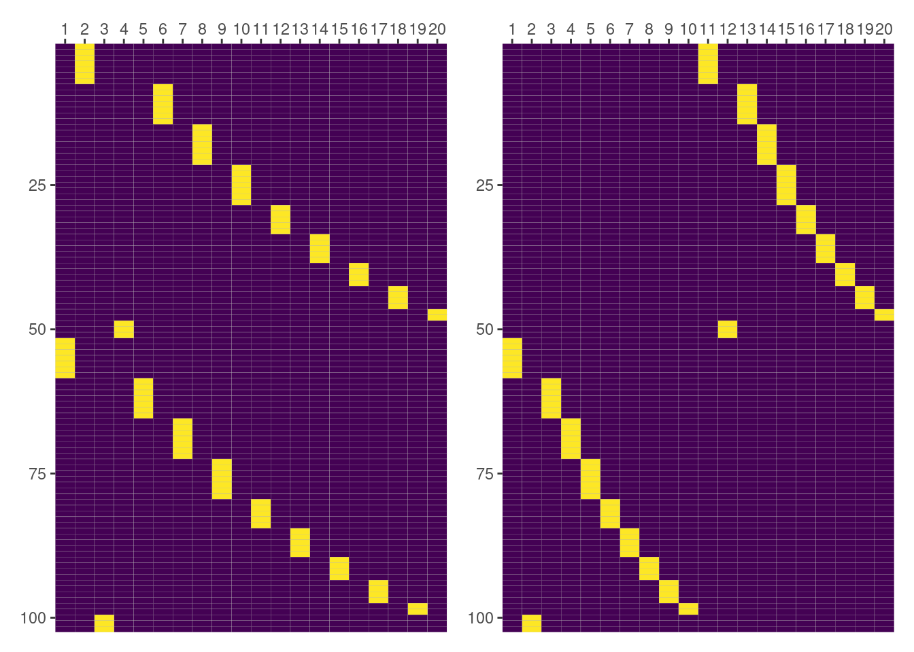
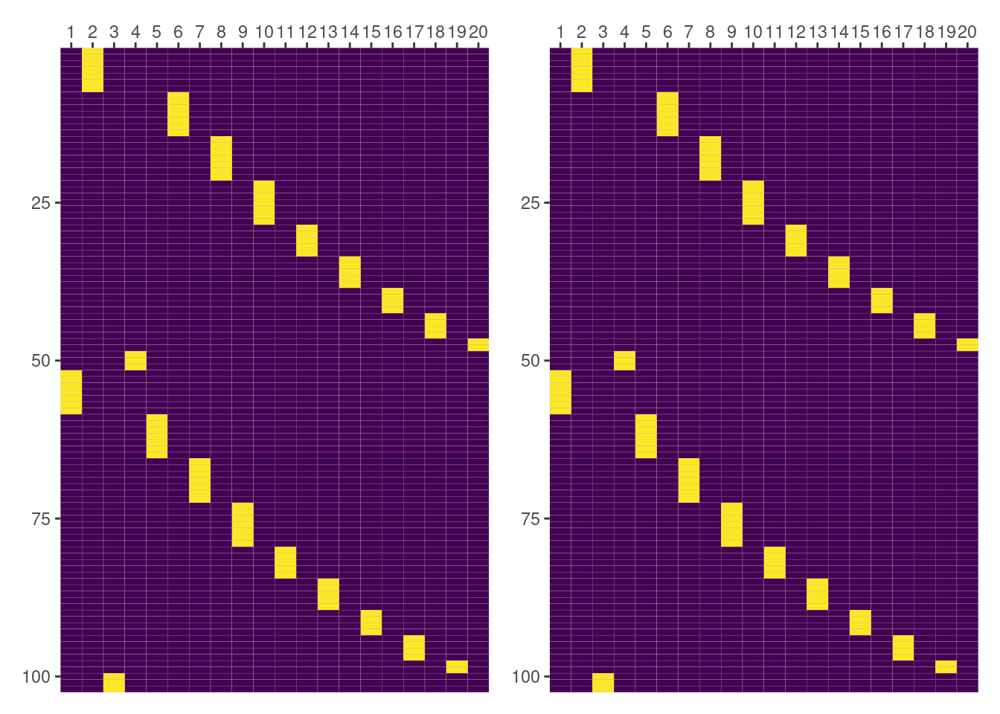
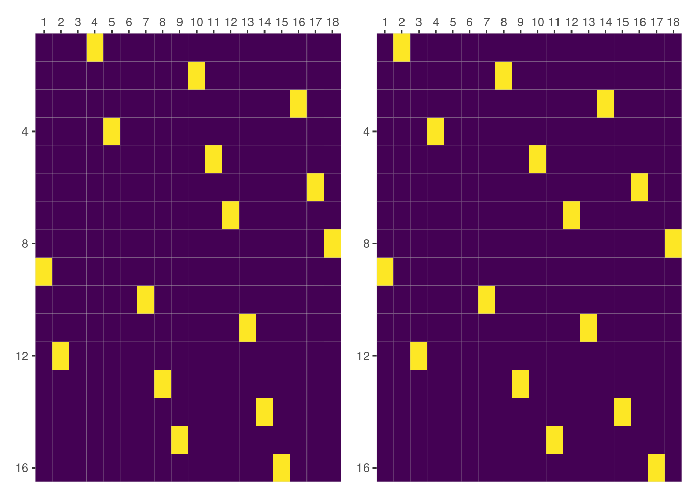
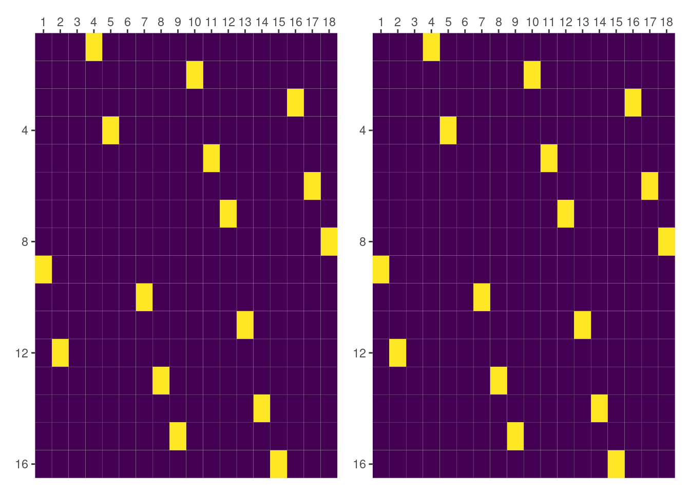

library(dplyr)
library(ggplot2)
library(lme4)
library(patchwork)Design matrices for group-specific effects in formulae and lme4
Bambi uses the library formulae to automatically construct design matrices for both common and group-specific effects. This post compares design matrices for group-specific effects obtained with formulae for a variety of scenarios involving categorical variables with the ones obtained with the R package lme4.
Introduction
A linear mixed model can be written as
\[ \boldsymbol{y} = \boldsymbol{X}\boldsymbol{\beta} + \boldsymbol{Z}\boldsymbol{u} + \boldsymbol{\epsilon} \]
where \(\boldsymbol{X}\) and \(\boldsymbol{Z}\) are the two design matrices we need to somehow construct when dealing with this type of model. \(\boldsymbol{X}\) is the design matrix for the common (a.k.a. fixed) effects, and \(\boldsymbol{Z}\) is the design matrix for the group-specific (a.k.a. random or varying) effects.
It is quite easy to obtain the design matrix \(\boldsymbol{X}\) in R using its popular formula interface. In Python, patsy provides equivalent functionality. Unfortunately, there aren’t as many alternatives to compute the matrix \(\boldsymbol{Z}\).
In R, there’s lme4, the statistical package par excellence for mixed models. It extends the base formula interface to include group-specific effects via the pipe operator (|) and internally computes both \(\boldsymbol{X}\) and \(\boldsymbol{Z}\) without the user noticing. That’s great!
In Python, we are working on formulae, a library we use to handle mixed model formulas in Bambi. In this process, I’ve found Fitting Linear Mixed-Effects Models Using lme4 vignette extremely useful when figuring out how to compute the design matrix for the group-specific effects.
Today, I was adding tests to make sure we are constructing \(\boldsymbol{Z}\) appropriately and found myself comparing the matrices obtained with formulae with matrices obtained with lme4. Then I was like … why not making this a blog post? 🤔
… and so here we are! But before we get started, just note this post mixes both R and Python code. I will try to be explicit when I’m using one language or the other. But if you’re reading a chunk and it looks like Python, it’s Python. And if it looks like R… you guessed! It’s R.
Setup
from formulae import design_matricesProblem
Here we will be comparing design matrices for the group-specific terms in a mixed-effects model obtained with both lme4 and formulae. We’re using the dataset Pixel that comes with the R package nlme.
data("Pixel", package = "nlme")
head(Pixel)Grouped Data: pixel ~ day | Dog/Side
Dog Side day pixel
1 1 R 0 1045.8
2 1 R 1 1044.5
3 1 R 2 1042.9
4 1 R 4 1050.4
5 1 R 6 1045.2
6 1 R 10 1038.9We’re not interested in how to fit a certain model here. We’re interested in constructing the design matrix for group-specific effects with different characteristics. We use the following formula
f1 = ~ (0 + day | Dog) + (1 | Side / Dog)where each part can be interpreted as follows
(0 + day | Dog)means thatdayhas a group-specific slope for eachDog. This is usually known as a random slope. The0indicates not to add the default group-specific intercept (because it’s added next).(1 | Side / Dog)is equivalent to(1 | Side) + (1 | Dog:Side). This means there’s a varying intercept for eachSideand a varying intercept for each combination ofDogandSide. In other words, we have a nested group-specific intercept, whereDogis nested withinSide.
lme4_terms = mkReTrms(findbars(f1), model.frame(subbars(f1), data = Pixel))lme4_terms contains much more information than what we need for this post. We mostly use lme4_terms$Ztlist, which is a list that contains the transpose of the group-specific effects model matrix, separated by term. These matrices are stored as sparse matrices of dgCMatrix class. If we want to have the sub-matrix for a given group-specific term as a base R matrix, we have to do as.matrix(t(lme4_terms$Ztlist$[["term"]])).
names(lme4_terms$Ztlist)[1] "1 | Dog:Side" "0 + day | Dog" "1 | Side" We have three group-specific terms. The first and the last ones are the group-specific intercepts we mentioned. These are the result of the nested group-specific intercept (1 | Side / Dog). Dog is nested within Side and consequently there’s an intercept varying among Side and another varying among Dog within Side. The second term, 0 + day | Dog, represents varying slope of day for each level of Dog.
We finally store the sub-matrix for each term in different objects that we’ll later use when comparing results with those obtained with formulae.
day_by_dog = as.matrix(t(lme4_terms$Ztlist$`0 + day | Dog`))
intercept_by_side = as.matrix(t(lme4_terms$Ztlist$`1 | Side`))
intercept_by_side_dog = as.matrix(t(lme4_terms$Ztlist$`1 | Dog:Side`))On the other hand, in Python, we use design_matrices() from the formulae library to obtain a DesignMatrices object. All the information associated with the group-specific terms is contained in the .group attribute and the sub-matrix corresponding to a particular term is accessed with .group[term_name].
dm = design_matrices("(0 + day | Dog) + (1 | Side / Dog)", r.Pixel)There’s a dictionary called terms_info within dm.group. To see the names of the group-specific effects we just retrieve the keys.
dm.group.terms.keys()dict_keys(['day|Dog', '1|Side', '1|Side:Dog'])Names differ a little with the ones from lme4, but they represent the same thing.
day_by_dog = dm.group['day|Dog']
intercept_by_side = dm.group['1|Side']
intercept_by_side_dog = dm.group['1|Side:Dog']Now let’s compare those matrices!
Design matrices for (day|Dog)
Rectangles in the following plot correspond to the cells in the matrix. The lowest value for day is 0, represented by violet, and the highest value is 21, represented by yellow. The 10 columns represent the 10 groups in Dog, and the rows represent the observations in Pixel. Here, and also in the other cases, the left panel contains the matrix obtained with lme4 and the right panel the one produced with formulae.

In this first case, both panels are representing the same data so we can happily conclude the result obtained with formulae matches the one from lme4. Yay!!
But we’re humans and our eyes can fail so it’s better to always check appropiately with
all(py$day_by_dog == day_by_dog)[1] TRUEDesign matrices for (1|Side)
Here the first column represents Side == "L" and the second column represents Side == "R". Since we’re dealing with an intercept, violet means 0 and yellow means 1. In this case it is much easier to see both results match.

all(py$intercept_by_side == intercept_by_side)[1] TRUEDesign matrices for (1|Side:Dog)
But things are not always as one wishes. It’s clear from the following plot that both matrices aren’t equal here.

But don’t worry. We’re not giving up. We still have things to do1. We can check what are the groups being represented in the columns of the matrices we’re plotting.
colnames(intercept_by_side_dog) [1] "1:L" "1:R" "10:L" "10:R" "2:L" "2:R" "3:L" "3:R" "4:L" "4:R"
[11] "5:L" "5:R" "6:L" "6:R" "7:L" "7:R" "8:L" "8:R" "9:L" "9:R" dm.group.terms["1|Side:Dog"].labels['1|Side[L]:Dog[1]', '1|Side[L]:Dog[10]', '1|Side[L]:Dog[2]', '1|Side[L]:Dog[3]', '1|Side[L]:Dog[4]', '1|Side[L]:Dog[5]', '1|Side[L]:Dog[6]', '1|Side[L]:Dog[7]', '1|Side[L]:Dog[8]', '1|Side[L]:Dog[9]', '1|Side[R]:Dog[1]', '1|Side[R]:Dog[10]', '1|Side[R]:Dog[2]', '1|Side[R]:Dog[3]', '1|Side[R]:Dog[4]', '1|Side[R]:Dog[5]', '1|Side[R]:Dog[6]', '1|Side[R]:Dog[7]', '1|Side[R]:Dog[8]', '1|Side[R]:Dog[9]']And there it is! Matrices differ because columns are representing different groups. In lme4, groups are looping first along Dog and then along Side, while in formulae it is the other way around.
We can simply re-order the columns of one of the matrices and generate and check whether they match or not.
intercept_by_side_dog_f = as.data.frame(py$intercept_by_side_dog)
colnames(intercept_by_side_dog_f) = py$dm$group$terms[["1|Side:Dog"]]$groups
names_lme4_order = paste(
rep(c("L", "R"), 10),
rep(c(1, 10, 2, 3, 4, 5, 6, 7, 8, 9), each = 2),
sep = ":"
)
intercept_by_side_dog_f = intercept_by_side_dog_f[names_lme4_order] %>%
as.matrix() %>%
unname()
all(intercept_by_side_dog_f == intercept_by_side_dog)[1] TRUEAnd there it is! Results match 🤩
Another formula
This other formula contains an interaction between categorical variables as the expression of the group-specific term, which is something we’re not covering above. In this case, we are going to subset the data so the design matrices are smaller and we can understand what’s going on with more ease.
# Subset data
Pixel2 = Pixel %>%
filter(Dog %in% c(1, 2, 3), day %in% c(2, 4, 6)) %>%
mutate(Dog = forcats::fct_drop(Dog))
# Create terms with lme4
f2 = ~ day + (0 + Dog:Side | day)
lme4_terms = mkReTrms(findbars(f2), model.frame(subbars(f2), data = Pixel2))
dog_and_side_by_day = as.matrix(t(lme4_terms$Ztlist$`0 + Dog:Side | day`))And now with design_matrices() in Python.
# Create terms with
dm = design_matrices("(0 + Dog:Side|day)", r.Pixel2)
dog_and_side_by_day = dm.group["Dog:Side|day"]Design matrix for (Dog:Side|day)
Although this term is called slope, it is not actually a slope like the one for (day|Dog). Since both Dog and Side are categorical, the entries of this matrix consist of zeros and ones.

We have the same problem than above, matrices don’t match. So we know what to do: look at the groups represented in the columns.
colnames(dog_and_side_by_day) [1] "2" "2" "2" "2" "2" "2" "4" "4" "4" "4" "4" "4" "6" "6" "6" "6" "6" "6"dm.group.terms["Dog:Side|day"].labels['Dog[1]:Side[L]|day[2.0]', 'Dog[1]:Side[R]|day[2.0]', 'Dog[2]:Side[L]|day[2.0]', 'Dog[2]:Side[R]|day[2.0]', 'Dog[3]:Side[L]|day[2.0]', 'Dog[3]:Side[R]|day[2.0]', 'Dog[1]:Side[L]|day[4.0]', 'Dog[1]:Side[R]|day[4.0]', 'Dog[2]:Side[L]|day[4.0]', 'Dog[2]:Side[R]|day[4.0]', 'Dog[3]:Side[L]|day[4.0]', 'Dog[3]:Side[R]|day[4.0]', 'Dog[1]:Side[L]|day[6.0]', 'Dog[1]:Side[R]|day[6.0]', 'Dog[2]:Side[L]|day[6.0]', 'Dog[2]:Side[R]|day[6.0]', 'Dog[3]:Side[L]|day[6.0]', 'Dog[3]:Side[R]|day[6.0]']But this they represent the same groups2. We can look if there’s a difference in how the interactions are ordered within each group.
lme4_terms$cnms$day
[1] "Dog1:SideL" "Dog2:SideL" "Dog3:SideL" "Dog1:SideR" "Dog2:SideR"
[6] "Dog3:SideR"And again, thankfully, we see there’s a difference in how columns are being ordered. Let’s see if matrices match after we reorder the one obtained with formulae.
dog_and_side_by_day_f = as.data.frame(py$dog_and_side_by_day)
colnames(dog_and_side_by_day_f) = py$dm$group$terms[["Dog:Side|day"]]$labels
side = rep(rep(c("L", "R"), each = 3), 3)
dog = rep(1:3, 6)
day = rep(c("2.0", "4.0", "6.0"), each = 6)
names_lme4_order = glue::glue("Dog[{dog}]:Side[{side}]|day[{day}]")
dog_and_side_by_day_f = dog_and_side_by_day_f[names_lme4_order] %>%
as.matrix() %>%
unname()
all(dog_and_side_by_day_f == dog_and_side_by_day)[1] TRUEConclusion
Although formulae works differently than lme4, and has different goals, we showed that formulae produces the same design matrices as lme4 for the variety of examples we covered. While case-based comparisons like these are not what one should rely on when writing software, the examples here were really helpful when working on the implementation in formulae and writing the corresponding tests. And if this post helps someone to better understand what’s going on when working with design matrices associated with group-specific effects, it will have been even more worth it!